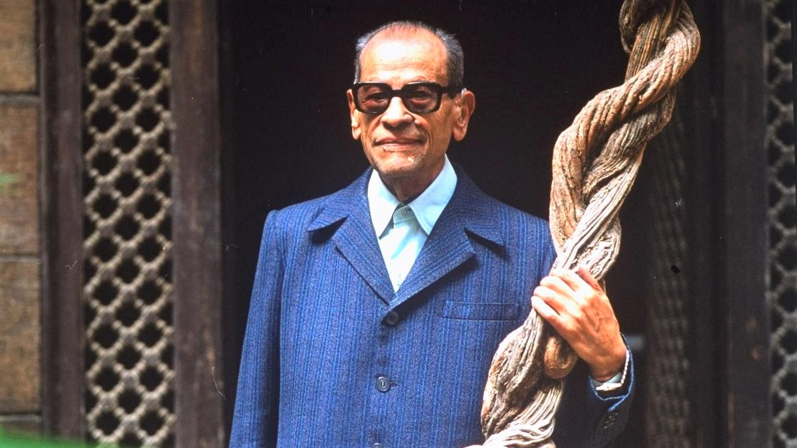

- 48 -

NAGUIB MAHFOUZ [ 1911]
Con đường xe hơi uốn lượn ở Alexandria, chạy sát mép bờ biển, không còn có vẻ như trìu mến ôm lấy sóng biển nữa. Nó đã bị đè bẹp dưới các hãng xe hơi hỗn độn, ồn ào, làm nó tắc nghẽn trong suốt bốn tháng hè. Tuy nhiên, sự quyến rũ của cái thành phố Ai Cập này vẫn còn tác động đến nhiều người và các quán cà phê lộ thiên vẫn đông đúc. Ta hãy nhìn kia, chỗ hai dãy bàn ghế mây, săn lại vì gió mặn của biển, đối diện với khách sạn Windsor, tại quãng trường Rainbeh: đó là nơi ưa thích của một “chàng thanh niên” bảy mươi lăm tuổi. Ngày nào cũng như ngày nào, vào khoảng chín giờ sáng, chàng ta dừng chân tại đó sau một buổi dạo bước dài, đầu chụp chiếc mũ rơm quen thuộc của những tay câu cá, đôi mắt tinh nhanh lấp lánh một ánh giễu cợt hiền lành giấu sau cặp kính mát: ở con người ấy, không có gì khiến cho khách qua đường phải tò mò chú ý, ngoại trừ cái hột cơm gần gò má, nổi tiếng không kém gì người mang tên nó trên mặt. Bất kỳ người dân Ai Cập nào cũng có thể nói ngay với ta, không sợ nhầm lẫn, đó là Qustaz el kabir (Nghệ sĩ bậc thầy) Naguib Mahfouz.
Tác giả của hơn 40 cuốn tiểu thuyết và tập truyện ngắn, trong đó gần 15 truyện đã được dựng thành phim, Naguib Mahfouz là một ngôi sao sáng trên bầu trời Ả Rập hiện đại.
Khác với nhiều nhân vật nổi tiếng khác, Naguib Mahfouz bao giờ cũng vẫn khiêm nhường và nhiệt tình với mọi người. Trong khi ngồi nói chuyện với một nhà báo nước ngoài bên tách cà phê không đường, ông vẫn không ngừng nhổm dậy đáp lại lời chào của các văn sĩ trẻ tương lại hoặc một người quen cùng phố. Thậm chí ông còn chiều theo ý muốn của một gia đình đi dạo qua gồm ông bố, bà mẹ, bà cô và hai đứa con, xin chụp chung với ông một tấm ảnh kỷ niệm để về treo ở phòng khách.
Vị lão tướng của văn học Ai Cập này sinh trong một gia đình tiểu tư sản ở Cairô. Giống như các nhân vật trong bộ tiểu thuyết ba tập của mình (Ngõ cụt giữa hai cung điện, Kasr và Chaouk, El Soukaria, được giải thưởng quốc gia về văn học của Ai Cập năm 1957), Naguib Mahfouz đã qua tuổi thơ ấu trong những ngách phố nhộn nhịp và ngoạn mục ở khu bình dân Gamliya. Ông mới lên tám khi đứng sau những chấn song cửa sổ, ông được chứng kiến cuộc khởi nghĩa quần chúng chống thực dân Anh năm 1919, những sự kiện đó đã để lại một dấu ấn không bao giờ phai mờ trong trí óc trẻ thơ của Naguib Mahfouz, đã được kể lại trong cuốn Beyn el Qasreyn. Những nhân vật quen thuộc của khu lao động Gamaliya cũng luôn luôn có mặt trong các tác phẩm của ông.
Là nhà văn hiện thực khi mới cầm bút, Naguib Mahfouz đã miêu tả những người cùng khổ như Zeyta, người gây tạo ra những phế nhân trong cuốn Zouqab el Maddap (Ngách phố của những phép mầu) - “Một người bạn đã chỉ cho tôi một nhân vật làm cái nghề đó, một nghề nay đã mai một” - nhà văn kể về cái sân chơi nơi diễn ra những trò mầu nhiệm vốn là thế giới của những kẻ hành khất, rồi ông nói thêm, kèm theo một chuỗi cười ròn rã, chân thật “Ngày nay những kẻ hành khất ấy không còn nữa. Những kẻ hành khất duy nhất chính là chúng tôi”. Đó là vì nghề văn chương là một nghề khó sống tại một nước Ai Cập nơi 60% số dân hãy còn mù chữ, và nơi vô tuyến truyền hình và máy ghi âm từ lâu đã hất cẳng sách báo. Tuy nhiên Naguib Mahfouz hoàn toàn không tỏ ra chua chát trước tình hình ấy. Ông nói:
– Vô tuyến truyền hình không phải là một kẻ cạnh tranh, ngược lại nó là một phương tiện truyền bá văn hóa mạnh mẽ đối với các tầng lớp dân chúng. Với lại, tôi cũng rất hài lòng về bộ phim truyền hình nhiều tập xây dựng trong những năm 60 dựa trên một tác phẩm của tôi.
Ông cũng không ảo tưởng về việc dựng thành phim các tác phẩm của mình:
– Đó là một thế giới khác hẳn, tuân theo những quy luật khác với các quy luật trong văn chương. Nhà đạo diễn rút ra từ tác phẩm văn học những gì mà họ cho là thích hợp với thị hiếu của một quần chúng rộng rãi”.
Chắc hẳn ý ông muốn nói đến những cảnh múa hở hang trong bộ phim của Hassan El Imam dựa trên bộ tiểu thuyết ba tập của ông. Tuy nhiên ông cho rằng một số nhà điện ảnh đã thể hiện được tinh thần các tác phẩm của ông, như bộ phim Ban đầu và lúc kết thúc của Salah Abou Seif trong đó diễn viên nổi tiếng Omar Sharif, khi ấy mới bước vào nghề, đóng vai chính.
Tuy được giới lãnh đạo hồi đầu của nền cộng hòa (sau năm 1952) chiều chuộng song Naguib Mahfouz không vì thế mà không chỉ trích những việc lộng hành của chính quyền Nasser (cuốn Tên kẻ cắp và đàn chó) và sau đó là chính quyền Sadate (cuốn Giờ cuối cùng).
Mấy năm gần đây, sức khỏe suy kém khiến cho Naguib Mahfouz phải giảm bớt nhịp độ làm việc. Giờ đây đối với ông, không gì thích thú cho bằng những buổi tranh luận sôi nổi giữa các bạn bè thân thiết ở một quán cà phê lộ thiên bên bờ sông Nil hay bên bờ biển.
ÔNG VUA CỦA CHỦ NGHĨA HIỆN THỰC Ả RẬP

.Ngày 10-12-1988, Viện hàn lâm Thụy Điển chính thức trao giải thưởng Nobel văn học 1988 cho nhà văn Ai Cập Naguib Mahfouz vì đã có công “khắc họa một nghệ thuật tiểu thuyết Ả Rập” có giá trị chung cho toàn nhân loại thông qua những tác phẩm giàu sắc thái, khi sát thực tế một cách tinh tường, khi đầy hàm ý ẩn dụ”. Ông là đại diện đầu tiên của thế giới Ả Rập được trao tặng giải thưởng quan trọng trên.
“Tôi không xứng đáng với giải Nobel”
* Thưa ông Mahfouz, trong các tác phẩm của mình, ông chứng tỏ là người có giác quan nhạy bén với truyền thông - bản thân ông cũng tự coi mình là đứa con của thế giới Ả Rập cổ điển. Liệu có thể nói, ông là một nhà văn ít quan tâm đến văn đàn thế giới?
– Điều đó đúng trong một chừng mực nhất định. Tôi là một bộ phận của khu vực Ả Rập đã trưởng thành. Tôi quan tâm trước hết đến cuộc sống Ai Cập với tất cả nguồn gốc và cội rễ lịch sử của nó, từ thời các Pharaông (các vua Ai Cập cổ đại) cho tới các quan hệ xã hội ở Cairô ngày nay. Song không phải vì vậy mà tôi chối từ những phần thế giới còn lại, đặc biệt là thế giới văn học. Tôi cho rằng, có lẽ tôi đã đọc tất cả các tác phẩm quan trọng của văn đàn thế giới từ Shakespeare, Tolstoi cho tới Proust, Faulkner và tôi ngưỡng mộ Thomas Mann.
* Trong số các tác phẩm của ông, cuốn nào được ông đánh giá là thành công nhất?
– Một câu hỏi quả khó trả lời, song ở đây có lẽ tôi muốn nhắc đến cuốn Lũ trẻ khu phố tôi, một cuốn sách bị cấm ở Ai Cập gần 30 năm do có những chương đoạn bị cho là mang tính tố cáo tôn giáo và vừa mới đây mới được tái bản. Hoặc là cuốn Một ngàn một đêm lẻ và trước hết là tiểu thuyết El Harafish. Trong cuốn này, nhóm người sinh trưởng ở những ngõ nhỏ Cairô, những người phải nhỏ đổ mồ hôi sôi nước mắt để kiếm miếng ăn hàng ngày. Xin nói thêm, nhóm bạn bè của tôi gồm nhiều nhà văn, họa sĩ biếm họa, nhạc sĩ và trí thức cũng lấy tên nhóm là “Harafish”. Chúng tôi hàng tuần đều gặp nhau ở một quán cà phê của Cairô.
– Mãi đến năm 1821 nghề in mới được truyền bá vào Ai Cập; tiểu thuyết đầu tiên của Ai Cập - cuốn Sainab của Husein Haikal được xuất bản vào năm 1913. Dường như văn học Ả Rập đang có nhu cầu phát triển mạnh mẽ để nhanh chóng đạt một bề dày như các nền văn học nổi tiếng khác. Phải chăng giờ đây cùng với việc ông được trao giải thưởng Nobel một thời kỳ tài năng nở rộ sẽ được mở ra?
– Tôi tin chắc như vậy. Ở đây tôi không chỉ nghĩ đến tôi, mà nghĩ tới cả những người bạn đồng nghiệp Ai Cập khác, đến nền văn học Ả Rập nói chung.
* Tại thế giới Ả Rập, ông lừng danh không chỉ trong văn học, mà cả trên lĩnh vực điện ảnh (ngoài 40 tiểu thuyết và tập truyện, Mahfouz còn là tác giả của 30 kịch bản phim - N.D). Đối với ông, phương tiện truyền thông nào quan trọng hơn, phim hay những trang sách văn học?
– Ở đây, ta cần phải phân biệt hai phương diện: Lao động sáng tạo và hiệu quả của nó. Dĩ nhiên tôi mong những điều tôi muốn truyền đạt cũng được thể hiện qua màn ảnh của phim và truyền hình. Song thực tiễn sáng tác, tôi ít nghĩ đến điều đó, tôi làm việc trước hết với chữ nghĩa và tìm cách biểu đạt những ý tưởng của mình qua ngôn từ. Việc đưa tác phẩm văn học lên màn ảnh để tăng cường hiệu quả là giai đoạn diễn ra sau đó. Quả thật tôi cũng quan tâm đến công việc này, song sở trường thực sự của tôi là viết sách; phim đối với tôi mang nghĩa là những sản phẩm phụ nhiều hơn.
* Ở khu vực tiếng Đức (CHDC Đức, CHLB Đức, Áo, Thụy Sĩ), tác phẩm của ông được xuất bản trước tiên tại CHDC Đức, mãi sau đó chúng mới được ra mắt bạn đọc tại CHLB Đức theo giấy phép in lại của CHDC Đức. Ông giải thích điều đó như thế nào?
– Sở dĩ như vậy là vì sau khi chấm dứt thời đại thực dân chúng tôi có một mối bang giao chính trị với Liên Xô, với toàn bộ các nước XHCN khởi đầu thông qua tổng thống Nasser. Như vậy có lẽ cũng dễ hiểu, vì sao tác phẩm của tôi ở khu vực chính trị và địa lý này được quan tâm nhiều hơn ở những nơi khác. Như người ta nói với tôi, chính nhờ có sự giới thiệu của một nhà xuất bản CHDC Đức điều tôi không hề biết, mà tôi lọt vào danh sách những nhà văn được xét trao Giải thưởng Nobel 1988. Và tới tận bây giờ tôi không thể tin nổi, cuối cùng chính tôi là người được xét. Tôi không bao giờ nghĩ đến điều đó. Tôi cũng không xứng đáng được giải thưởng ấy.
* Vậy ở Ai Cập, còn ai có thể xứng đáng với Giải Nobel hơn là chính ông?
– Trước hết tôi muốn nhắc đến tên tuổi của Yehia Hakki, một nhà văn nguyên là nhà ngoại giao, năm nay 89 tuổi, người được tôi coi là một trong những tấm gương. Ngoài một loạt truyện ngắn, cuốn Những cây bạch lạp của Um Hashim của ông có một ý nghĩa rất quan trọng. Trong tác phẩm đó, ông khắc họa được mối xung đột giữa di sản truyền thống và những kiến thức khoa học tự nhiên và cuối cùng là sự hòa hợp giữa chúng.
* Còn ngoài khu vực Ả Rập, nhà văn nào được ông coi là “xứng đáng hơn?”.
– Tôi muốn kể thêm vài đồng nghiệp khác, chẳng hạn nhu El Tayeb người Xuđăng, hay Taher Wattar người Angiêri và Taher ben Jalloum người Marốc. Tuy Wattar và Jalloum là hai nhà văn viết bằng tiếng Pháp, song họ chỉ dùng ngôn ngữ đó để truyền đạt tinh thần bản địa của họ cũng như đề cập đến những vấn đề của nước họ. Chúng ta không thể trách cứ hai nhà văn đó về việc họ viết văn qua một ngôn ngữ nước ngoài. Thực tế, hoàn cảnh xã hội đã buộc họ phải làm như vậy. Còn ngoài khu vực Ả Rập: Người ta nhắc nhiều đến những tên tuổi như Graham Greene, Albertto Movaria hay Joice Carol Oates. Theo sự cảm nhận của tôi, Greene và Moravia là những tài năng khổng lồ. Họ là nhà văn xứng đáng hơn tôi.
“Tương lai? Tôi giơ tay cầu xin như một kẻ hành khất”
* Tại sao ông không bay sang Thụy Điển để trực tiếp nhận giải Nobel?
– Tình trạng sức khỏe của tôi và tư chất con người tôi không cho phép tôi làm được điều đó. Như tôi đã nói, tôi chưa bao giờ ra nước ngoài. Việc tôi không rời khỏi Ai Cập đã thuộc về bản chất của tôi, vì sao giờ đây đột nhiên tôi phải vi phạm nguyên tắc đó?
* Người ta vẫn hay phê phán ông vì trong tác phẩm của mình, ông sử dụng tiếng Ả Rập bác học ngay cả những đối thoại giữa những nhân vật thuộc tầng lớp bình dân, những người mà ngoài đời chủ yếu nói tiếng địa phương. Ông muốn đạt một điều gì qua đó?
– Quả thật tôi luôn tìm cách né tránh mọi thổ ngữ, những tiếng thực sự được dùng trong hội thoại. Thay vào đó, tôi cố tạo ra một sự thỏa hiệp giữa tiếng Ả Rập kinh điển và thứ ngôn ngữ mà người dân nước tôi thuộc tầng lớp xã hội khác nhau nhất vẫn sử dụng hàng ngày. Tôi phải tìm ra một giải pháp dung hòa như vậy là bởi tôi muốn làm cho toàn bộ thế giới Ả Rập có thể hiểu được tôi (thế giới Ả Rập hiện bao gồm 21 nước cùng nói tiếng Ả Rập ở Bắc Phi và Cận Đông). Ước sao toàn nhân loại có thể nhất trí với nhau trong một đặc ngữ chung, một ngôn ngữ được cả thế giới sử dụng từ người châu Âu cho tới những cộng đồng sống trên các châu lục khác. Thử hỏi đã có bao nhiêu cuộc chiến tranh bùng nổ cũng chỉ vì những hiểu lầm do bất đồng ngôn ngữ gây ra? Chẳng hạn như tiếng La Tinh: Giá như người châu Âu bảo toàn được ngôn ngữ đó và truyền bá nó ra khắp thế giới thì không còn nghi ngờ gì nữa ta đã có một ngôn ngữ phù hợp có thể tạo nền tảng cho sự hiểu biết lẫn nhau giữa các dân tộc.
* Xin ông cho biết vài nét về tác phẩm ông đang sáng tác
– Chẳng có tác phẩm nào cả.
* Vậy những dự án cho tương lai?
– Tương lai? Làm sao tôi biết được. Đối với tương lai tôi chỉ là một kẻ hành khất. Tôi chỉ biết giơ tay cầu xin và chờ đợi sự ban phước. Một trong những tính cách đặc trưng của người Ai Cập là không bao giờ muốn nhìn quá xa và tương lai, mà chấp nhận một ngày mới đến như nó vốn sẽ đến.
* Ông nghĩ gì về chủ nghĩa xufi, yếu tố thần thoại trong Hồi giáo?
– Tôi dành thiện cảm cho yếu tố đó trên phương diện văn học, song, với tư cách là một người đương đại – tôi chống lại nó. Bởi tự đắm mình vào xufi, vào thế giới thần thoại cũng có nghĩa là khước từ cuộc sống. Tôi là người yêu cuộc sống. Chạy trốn vào hoang tưởng là phản lại bản chất con người, là phi hiện thực. Có lẽ vì thế mà các nhà phê bình văn học mệnh danh tôi là “Ông Vua” của chủ nghĩa hiện thực Ả Rập.
* Thế nhưng trong tác phẩm của ông cái thực và cái mơ, những dữ kiện cụ thể và những ý tưởng mộng mị, dường như chúng có thể hoán vị với nhau. Đôi khi những điều mộng mơ, những điều tưởng tượng lại có vẻ hiện thực hơn là những điều có thực, chẳng hạn như trong Một ngàn một đêm lẻ hay trong Những cuộc du hành của IBN Fattuma.
– Mỗi một tác phẩm có một cấu trúc hiện thực riêng. Chủ nghĩa hiện thực mà tôi nhắc tới đây không phải là chủ nghĩa hiện thực đơn diện (monorealism), mà là chủ nghĩa hiện thực đa diện (polyrealism). Chúng ta đạt được nó thông qua sức tưởng tượng, bởi tự thân văn học là hư cấu. Tôi viết văn chẳng qua là tôi tìm cách tạo ra một vẻ hiện thực cho những sự kiện không thực xảy ra. Ngay cả trong trường hợp tôi xuất phát từ những dữ kiện có thực, thì những dữ kiện đó cũng đã bị tôi biến dạng đi theo tinh thần của một chủ nghĩa hiện thực nghệ thuật và theo nghĩa đó chúng vẫn là sản phẩm của trí tưởng tượng.
* Phê phán xã hội là tư tưởng chủ đạo trong các tác phẩm của ông. Có thể nhận xét như vậy được không?
– Sao lại không? Đó là chủ đề đầu tiên và cũng là chủ đề quan trọng nhất của tôi, là cội nguồn cho cảm hứng sáng tác của tôi. Tất cả là vì sự công bằng trong xã hội.
* Ông Mahfouz, tên tuổi ông hiện được cả thế giới nhắc tới, ông có muốn chuyển tới thế giới một thông điệp không?
– Ô không, thay vì điều đó, tôi xin kể một giai thoại nhỏ sau: Lần nọ, một truyện ngắn của tôi được giới thiệu tới bạn đọc, tuy không nằm trong số những truyện ngắn thành công của tôi, song nó được tờ Al Ahram đăng ở vị trí trang trọng và ca ngợi hết lời. Lúc ấy tôi có gặp một người bạn, anh ta nói đùa với tôi rằng khi đăng truyện đó lẽ ra tôi không nên đề tên tác giả là “Mahfouz” mà phải đề là “Mahsouz” mới đúng. Trong tiếng Ả Rập, “mahsouz” có nghĩa là “gặp may”, “tốt số”… Tôi chỉ muốn nhấn mạnh ý đó: Vâng, tôi là người gặp may.